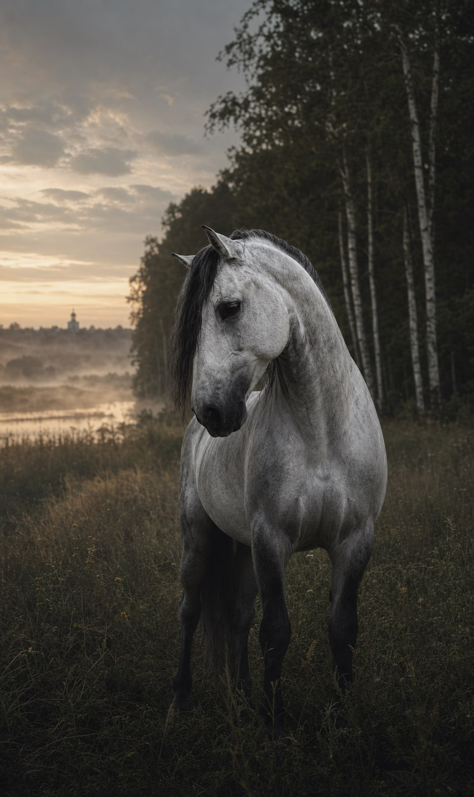
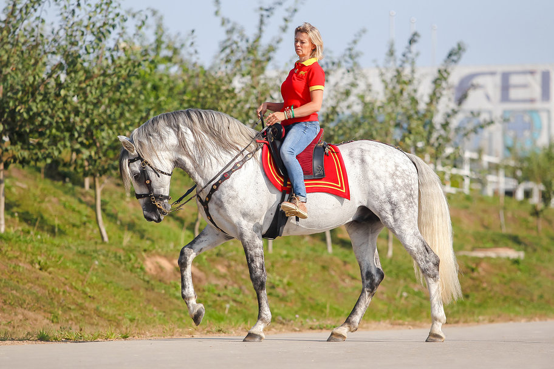
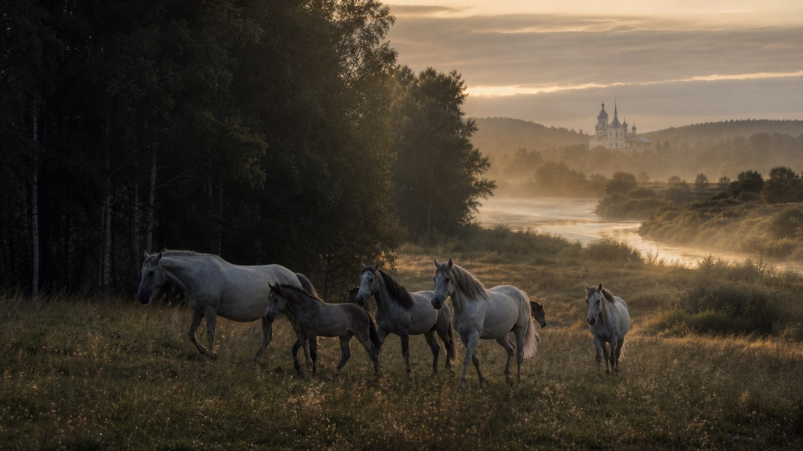
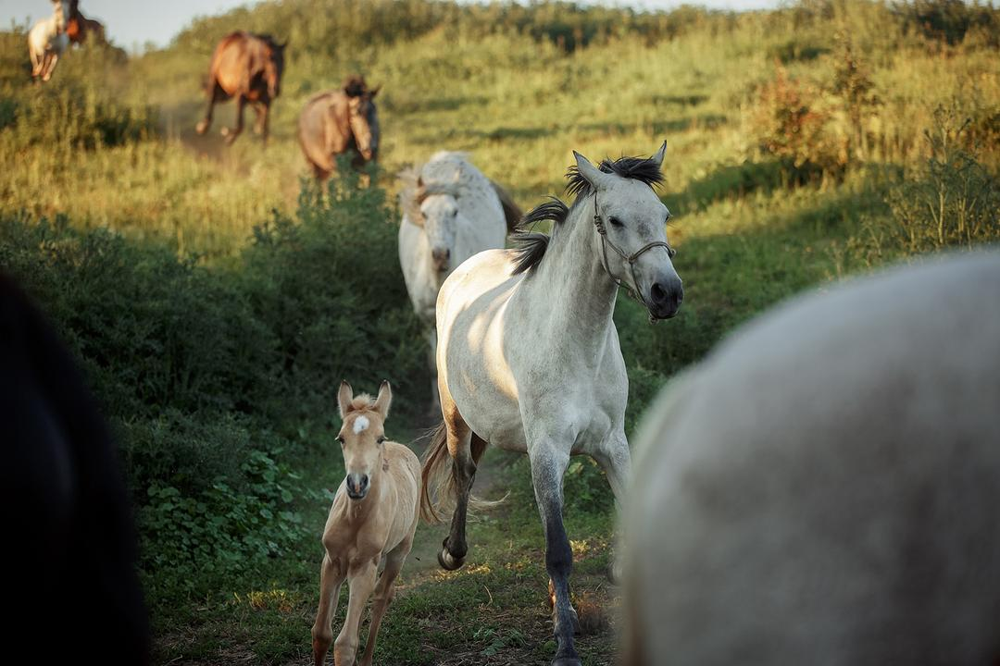
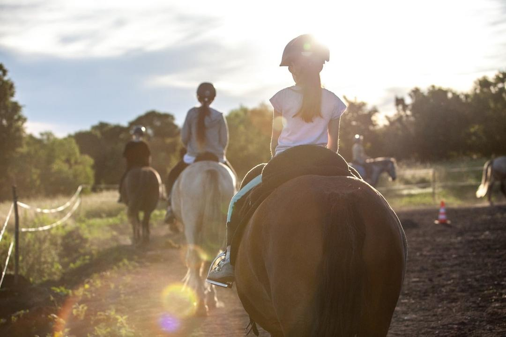
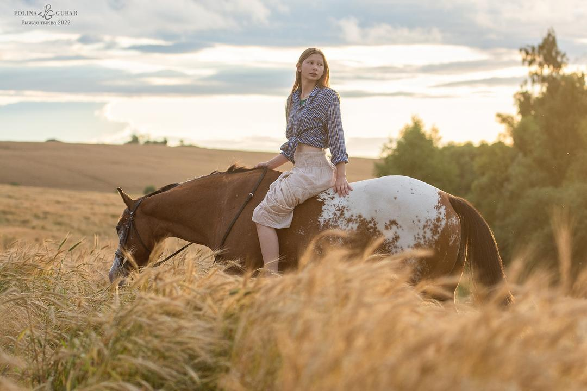

Pura Raza Española
Испанская кровь. Русская земля.
Yeguada MS. Разведение андалузских лошадей PRE в Тульской области.

Основана Марией Солдатовой
Порода начинается с отношения.
Yeguada MS разводит чистопородных PRE и кросс-андалузов. Цель фермы - широкие движения, барочный экстерьер и доброжелательный характер.
Лошади растут в табуне, много двигаются по холмистым пастбищам и с раннего возраста общаются с человеком. Ферма сохраняет узнаваемый испанский тип в условиях русской земли.
«Спокойная сила видна не в декоре. Она видна в движении лошади».
Лошади Yeguada MS
Подтверждённые данные с текущего сайта. Точные фотографии для карточек перед публикацией нужно согласовать с владельцем.
Селекционная программа
Широкий ход. Барочный тип. Ясный характер.
Основной производитель фермы - Bucefalo XXXII. Серый жеребец PRE, импортированный из Испании и проверенный по потомству.
- 2007
- год рождения
- 160 см
- рост в холке
- 100+
- детей по данным фермы
- ANCCE
- допуск в разведение

Земля формирует движение.
Чернозёмные поля, холмистые пастбища, река и табунное содержание создают естественную среду для молодняка и взрослых лошадей.




Некоторые решения нельзя принять по фотографии.
Приезжайте познакомиться с лошадьми Yeguada MS лично.
Нужно ли договариваться о визите заранее?
Да. Свяжитесь с Марией и согласуйте дату перед поездкой.
Можно ли получить дополнительные фото и видео?
Запросите актуальные материалы конкретной лошади напрямую у фермы.
Где посмотреть документы PRE?
Документы и данные студбука показываются для конкретной лошади по запросу.